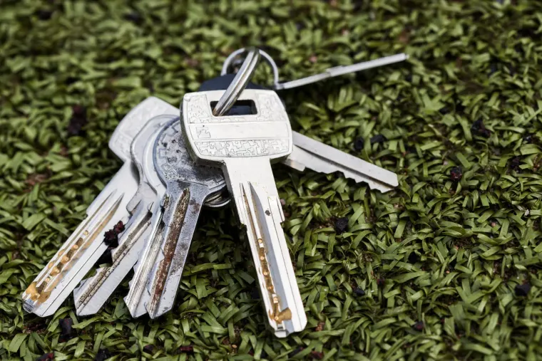
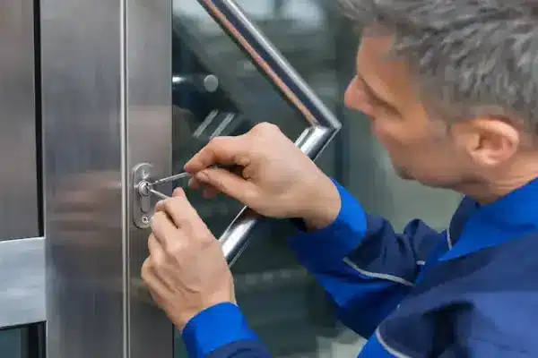
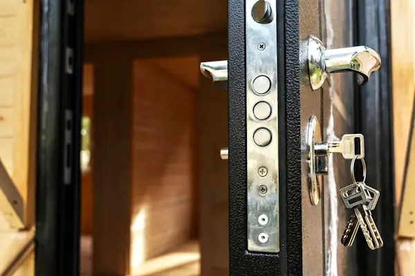
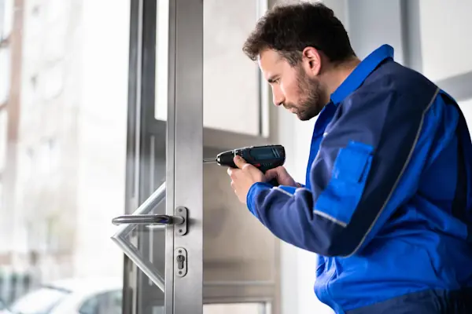
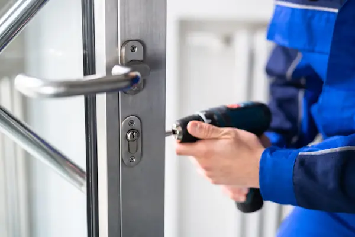

Schlüssel verloren
Der Bund ist weg – im Bus, im Büro, irgendwo unterwegs. Wir öffnen die Tür und besprechen danach mit Ihnen, ob ein Schlosswechsel sinnvoll ist, damit der verlorene Schlüssel kein Risiko bleibt.
Sie stehen vor Ihrer eigenen Tür und kommen nicht hinein – weil der Schlüssel weg ist, von innen steckt oder das Schloss nicht mehr mitspielt. Als Schlüsselnotdienst für Aachen öffnen wir Ihre Wohnungs- oder Haustür möglichst beschädigungsfrei. Den Preis nennen wir Ihnen am Telefon, bevor wir losfahren; im Stadtgebiet sind wir in der Regel nach rund 30 Minuten bei Ihnen.
5,0 bei über 170 Bewertungen

Ist die Tür lediglich ins Schloss gefallen, hält sie allein die Falle. Solche Türen bekommen unsere Monteure meist in wenigen Minuten auf, ohne dass Schloss, Zylinder oder Zarge Schaden nehmen.
Wurde zusätzlich abgeschlossen, liegt der Riegel im Schließblech – das kostet mehr Zeit und mehr Technik. Dasselbe gilt, wenn von innen ein Schlüssel im Zylinder steckt. Beides ist für uns Alltag, es dauert nur länger als bei einer zugefallenen Tür. Sagen Sie am Telefon einfach, was der Fall ist – dann rechnen wir vorher ehrlich statt hinterher.
Welche Methode zum Einsatz kommt, entscheidet der Monteur vor Ort. Eine alte Wohnungstür in der Aachener Innenstadt braucht eine andere Herangehensweise als eine neue Haustür mit Mehrfachverriegelung.

Der Bund ist weg – im Bus, im Büro, irgendwo unterwegs. Wir öffnen die Tür und besprechen danach mit Ihnen, ob ein Schlosswechsel sinnvoll ist, damit der verlorene Schlüssel kein Risiko bleibt.

Klassiker im Mehrfamilienhaus: Jemand hat von innen abgeschlossen und den Schlüssel stecken lassen. Auch dann kommen wir hinein, es dauert nur etwas länger als bei einer zugefallenen Tür.

Bricht der Bart im Zylinder ab oder lässt sich der Schlüssel kaum noch drehen, holen wir zuerst das Reststück heraus. Danach prüfen wir, ob der Zylinder weiterverwendet werden kann.
Julia Winter
Google Bewertung
★★★★★
Von diesem Aachener Schlüsseldienst kann ich nur Gutes berichten! Mein Schlüssel steckte im Schloss, und bei den heißen 37 Grad draußen wollte ich schnell wieder in meine Wohnung. Der Techniker war innerhalb von 20 Minuten vor Ort.
Der Preis richtet sich nach Wochentag und Uhrzeit – nicht danach, wie dringend es gerade ist.
Alle Preise verstehen sich inklusive 19 % Mehrwertsteuer und zuzüglich Anfahrtskosten. Nicht im Preis enthalten sind zusätzliche Lohnkosten bei erschwerten Türöffnungen, insbesondere bei abgeschlossenen Türen, sowie Montagearbeiten nach der Türöffnung und anfallende Materialkosten. Gezahlt wird vor Ort – bar, mit EC- oder Kreditkarte.
Rufen Sie an – unser Aufsperrdienst ist täglich von 08:00 bis 24:00 Uhr erreichbar, freitags und samstags bis 02:00 Uhr nachts.
Nicht jede verschlossene Tür ist ein Aussperrfall. Manchmal ist der Zylinder verschlissen, der Schlüssel dreht durch oder die Tür lässt sich nur noch mit Kraft verriegeln. Dann reicht ein reiner Aufsperrdienst nicht: Wir öffnen nicht nur – wir bringen das Schloss wieder in Ordnung.
Das entscheiden wir vor Ort gemeinsam mit Ihnen. Ein schwergängiger Zylinder muss nicht in jedem Fall ersetzt werden. Musste dagegen aufgebohrt werden oder ist ein Schlüssel abhandengekommen, ist ein neuer Schließzylinder die ehrlichere Lösung.
Gängige Schließzylinder haben wir dabei, größere Schließanlagen planen wir vorher mit Ihnen. Häufig hat zuvor jemand ohne Fachkenntnis am Schloss gearbeitet – falsch montierte Teile verschleißen schnell und klemmen bald wieder. Deshalb montieren wir sauber und verbauen Zylinder von Herstellern, die wir kennen.

Im Aachener Stadtgebiet sind wir in der Regel innerhalb von 30 Minuten bei Ihnen. Eine zugefallene Tür ist danach meist in wenigen Minuten offen. Ist abgeschlossen oder steckt ein Schlüssel von innen, dauert es entsprechend länger.
Der Grundpreis richtet sich nach Wochentag und Uhrzeit: 75 € werktags zwischen 08:00 und 17:00 Uhr, 100 € abends, 125 € nachts. Samstags sind es 100 €, ab 14:00 Uhr sowie an Sonn- und Feiertagen 125 €. Bei erschwerten Öffnungen, etwa bei abgeschlossenen Türen, kommen zusätzliche Lohnkosten hinzu. Wir sagen Ihnen vorher, wenn das der Fall ist.
Ja. Ein steckender Schlüssel blockiert den Zylinder von der Gegenseite, dafür gibt es eigenes Werkzeug. Sagen Sie es uns bitte am Telefon, damit der Monteur passend ausgerüstet losfährt.
In den allermeisten Fällen nicht. Wir arbeiten so, dass Tür, Zarge und Zylinder erhalten bleiben. Nur wenn sich ein Schloss anders nicht öffnen lässt, muss der Zylinder aufgebohrt werden. Das besprechen wir vorher mit Ihnen und setzen anschließend direkt einen neuen Zylinder ein.
Täglich von 08:00 bis 24:00 Uhr, freitags und samstags bis 02:00 Uhr nachts. Gezahlt wird direkt vor Ort, bar, mit EC- oder Kreditkarte.
Ist der Schlüssel endgültig verschwunden, ist ein Schlosswechsel meistens die richtige Entscheidung. Fehlt nur der Zweitschlüssel, fertigen wir Ihnen einen Ersatzschlüssel an – melden Sie sich dafür einfach telefonisch oder per WhatsApp, den Preis nennen wir Ihnen vorab am Telefon. Und wer die Tür bei der Gelegenheit sicherer machen möchte, findet auf unserer Seite zum Einbruchschutz die passenden Möglichkeiten. Was die einzelnen Leistungen kosten, steht in der Preisübersicht.